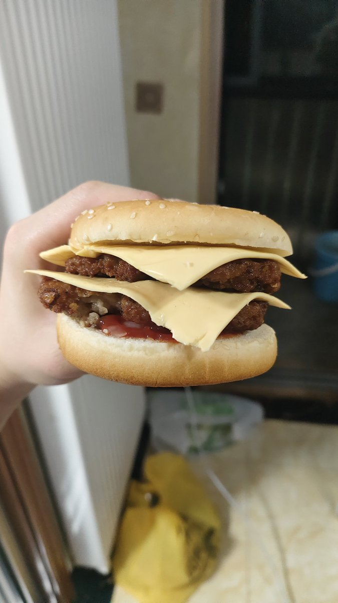

青石巷🍀🕊️
@qingshixiang258
@Determinat_37 好厉害，我咬一口～（啊～

樂( ◜‿◝ )♡
@Determinat_37
小猫，你可以吃芝士汉堡
这个汉堡背后是我备了两小时菜，两斤的肉馅手剁麻了，生粉一开始放少了还，肉饼不成型反反复复加了很多次料，最后煎出来脆皮的汉堡肉饼巨香巨好吃
两层肉两层芝士再来一点洋葱碎和番茄酱简直就是人间美味
年中吃过最爽的一餐饭，从一堆腊味里脱离出来了
祝你们新年发大财w https://t.co/65fgVt3XVN